Backpacking to the East Rim: My First Solo Backpacking Experience
April 9-10, 2026
Published on April 25, 2026
Back in January, I entered the Grand Canyon backcountry permit lottery, with the goal to hike the canyon rim-to-rim. Somehow, I won this lottery and I am now committed to doing the overnight hike with my friend Ethan in mid-May. In order to train for this hike and test out my new backpacking gear, I decided to do a quick overnight backpacking trip in Big Bend National Park in April 2026.
I decided to hike up to an area of the park that I’ve never been to before, which is the East Rim of the Chisos Mountains. I booked my campsite online about a week before and was one of only two groups of hikers to reserve a site on the East Rim. The day before my hike, I drove to Marathon, Texas, and had a wonderful (and obligatory!) plate of nachos at the 12 Gage restaurant. I camped in my car at the Motel & RV park in the town.
The following morning I got up early to drive to the park, and was rewarded with a wonderful sunrise that lit up the Santiago Mountains as I drove south.
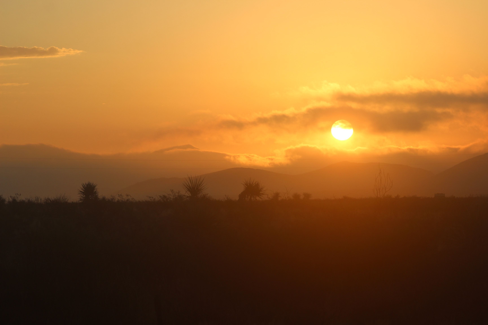
Once I got to the Chisos Basin, I loaded up my backpack with everything I needed and took off on the Pinnacles Trail. I was a little nervous and on edge since I had never backpacked alone before, and the rangers at Big Bend really want you to know that the Chisos is bear and mountain lion country. I very quickly saw some of Big Bend’s wildlife, including deer and Mexican jays, but no bears or mountain lions. Had I known that I would see as much wildlife as I did, I would’ve packed my telephoto lens, but I only brought my stock 18-55mm with me to save weight
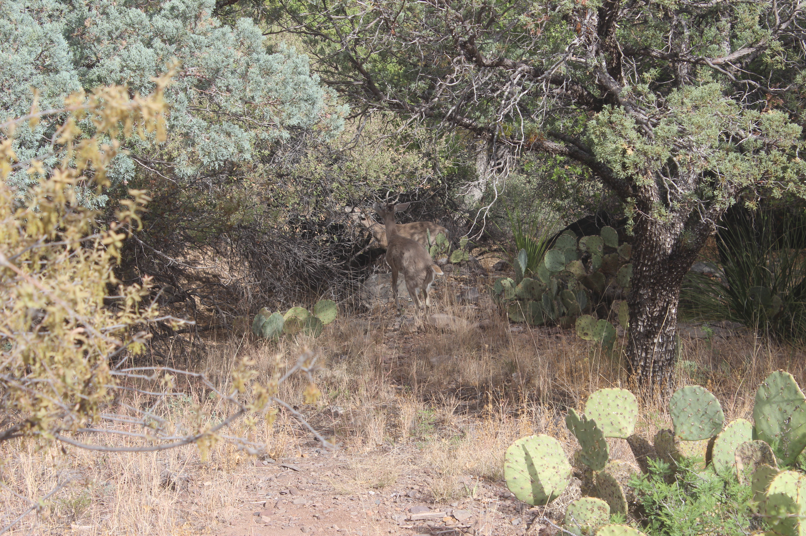
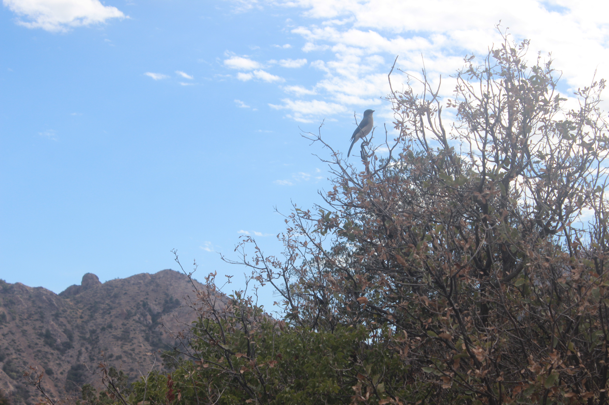
Eventually I made it up the many switchbacks that take you to the turn off for Emory Peak (the highest peak in the Chisos). I took a nice break at the trail intersection, and continued on my way down the Boot Canyon Trail.
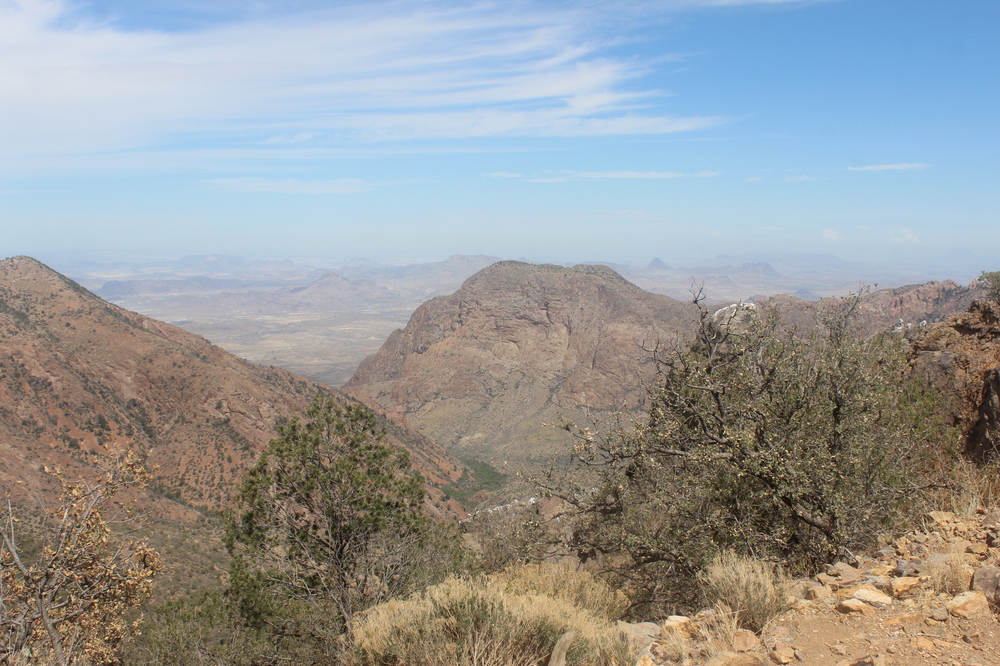
Boot Canyon was incredible. I ran into very few hikers on this section of the trail, but did find a reptilian friend. The Boot Canyon Trail then met the East Rim trail, which I took up to my campsite. Along that trail, I didn’t see a single human being, but I saw another herd of deer, and some great views! I was pretty tired at this point, but overall, I was doing pretty well. I made pretty good time while hiking and set up camp at about 2:30 PM. I just kind of laid there for a bit and vegetated while time passed.
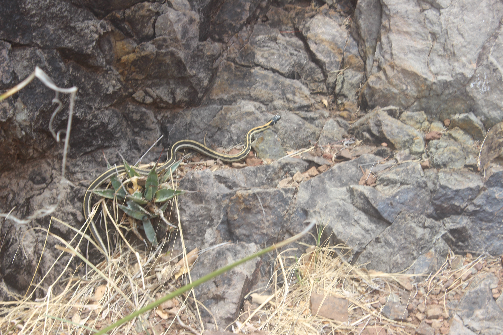
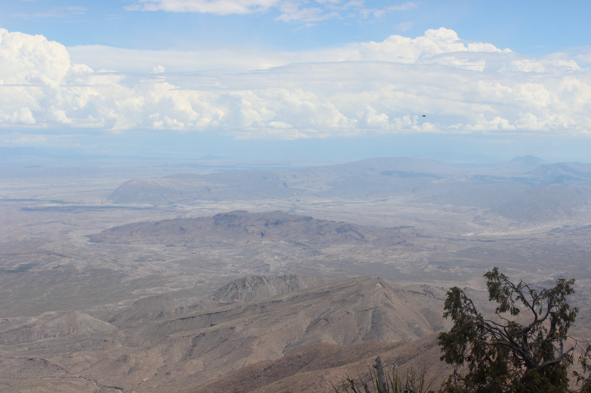
Later that afternoon, I heard raindrops falling and thunder approaching. The wind was hitting me directly, and I had to decide whether to pack up camp and end the trip early, or tough out the storm in my tent. I decided to stay at my campsite because I was wary of hiking back down Boot Canyon in potential flash flood conditions. This turned out to be the right choice, despite risking being on top of a mountain with a thunderstorm right next to me (the next morning, the PSAR volunteer at the Chisos Basin was sure to let me know that people have been struck by lightning up on the rim).
Heavy rain never appeared, and in fact, the rain stopped. But the thunder only got more and more intense. I came to realize that the Chisos Mountains were stopping the storm right in front of me, so I went out to have a look:
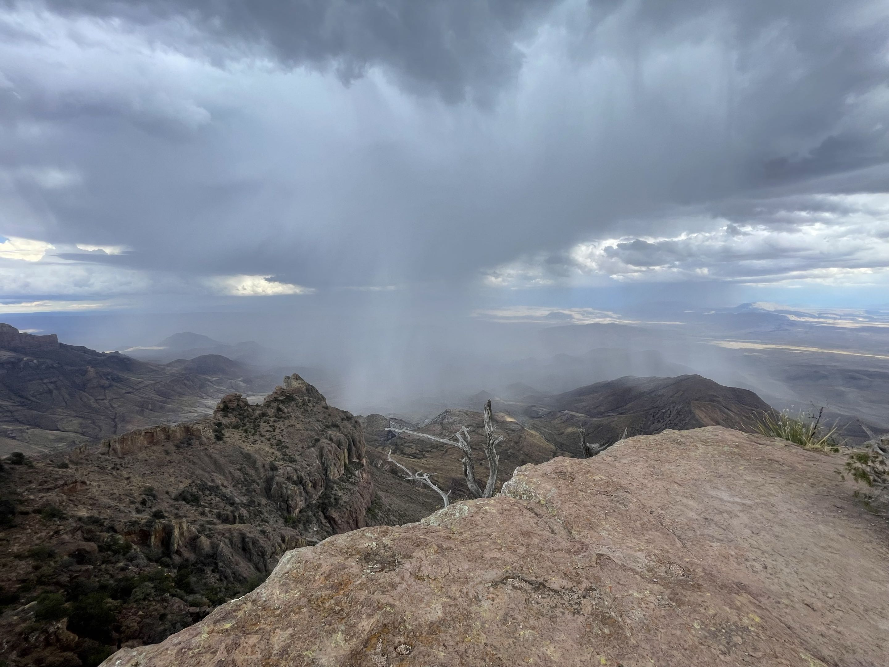
I was treated to one of the most incredible scenes I’ve ever witnessed in nature. The thunderstorm stalled out directly in front of me. I could see it change in real time from cloud level. It was surreal seeing it happen by the second. Clouds whirled around, rain shifted left to right as it was pushed by the wind, while the Sun poked holes through the clouds and lit up parts of the desert floor. I watched the storm grow in intensity and then fade over the course of an hour or so. Once it was gone, I noticed there were white sprinkles on the ground where hail had fallen on the desert floor, and the washes down below were flowing with water towards the Rio Grande. Afterwards, I made dinner and ate at the same overlook where I watched the storm. At this point I had met the other group of hikers who had a campsite on the East Rim. They turned out to be a group of three Slovenians who lived in Houston and were there to celebrate a birthday. They were very friendly and cool, and even offered me some whiskey to celebrate with them.
The Sun began to set and the lighting of the Chihuahuan Desert changed. We could see deep into Mexico, at least dozens of miles. The sunset was an even better reward for riding out the storm a few hours before.
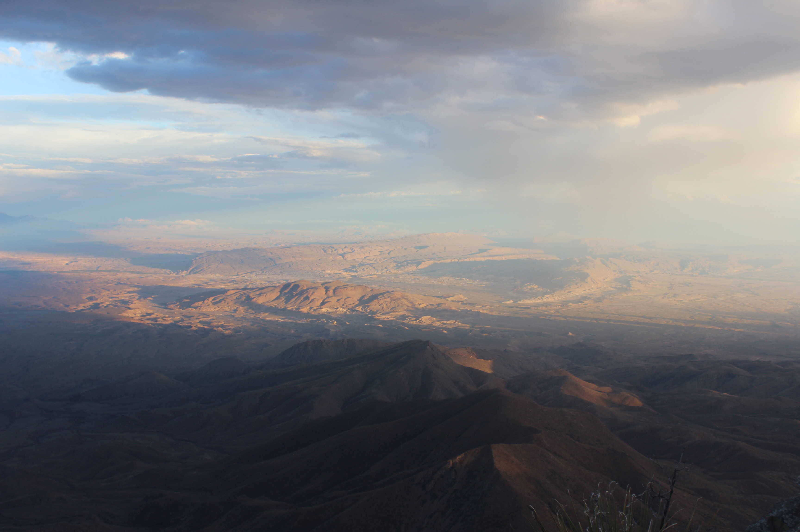
Bed time!
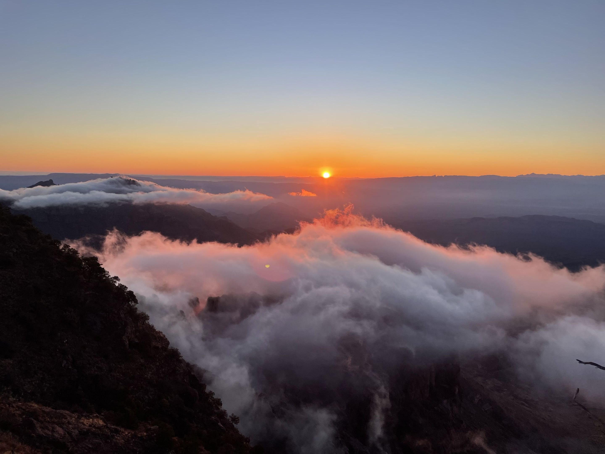
I woke up the following morning and watched the sunrise. I packed up camp and continued along the East Rim Trail to the official end of the Boot Canyon Trail, where I picked it back up and followed it back to the turn off for Emory Peak.
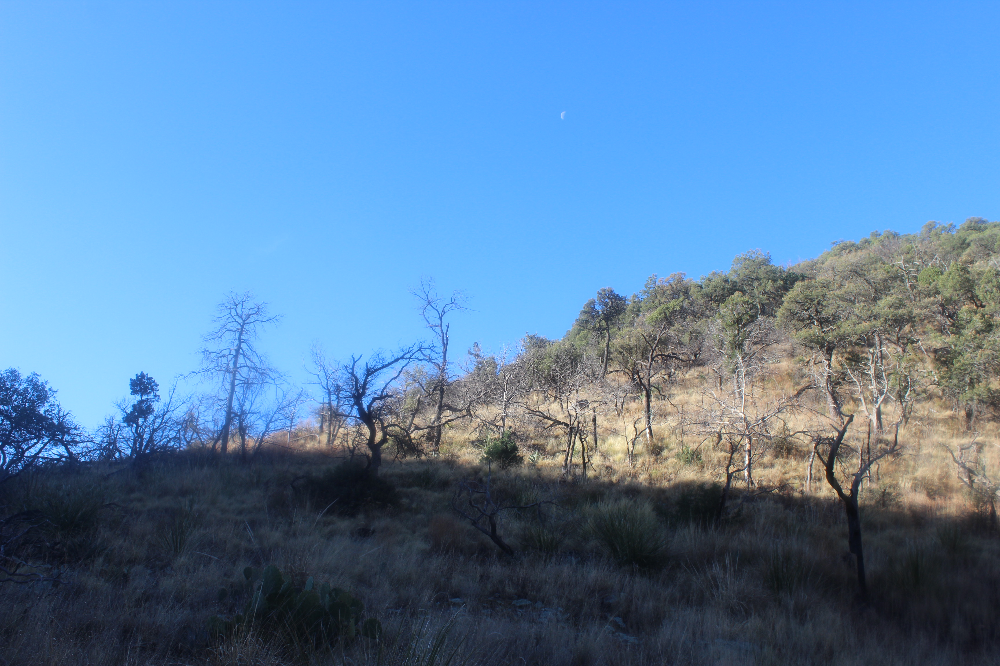
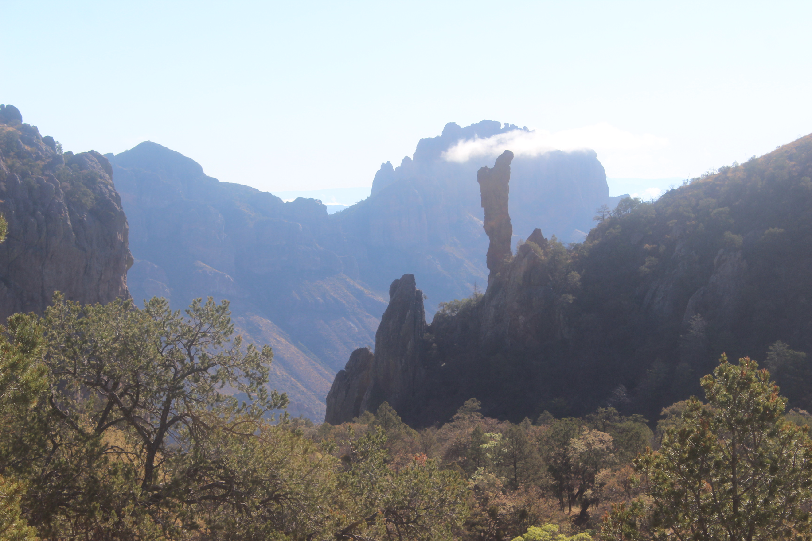
After what felt like a million switchbacks down and running out of water right as I got to the visitor center, I loaded my gear back into my car and immediately went to the general store in the basin to get more water.
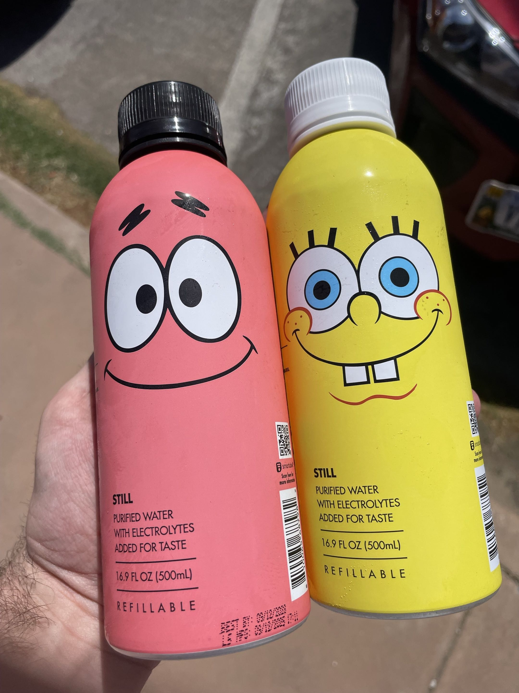
Overall, it was a very successful trip. I got to meet some very nice people, talk to other backpackers, and witness something completely unexpected. I learned more about what I should bring to the Grand Canyon and what I can do without on the exceptionally more difficult rim-to-rim hike. Hopefully in about a month or so I should have a report on that one.